Peng ZhangPh.D, LecturerDepartment of Artificial Intelligence, Shandong University of Science and Technology Office: J13-322, 579 Qianwangang Road, Qingdao, 266590 Email: pengzhang.sdu [at] gmail.com CV • Google Scholar • Github• 主页 |
About Me
-
Greetings! I am a lecturer in Shandong University of Science and Technology (SDUST). I received my PhD degree from University of Technology Sydney (UTS) supervised by A/Prof. Qiang Wu and Dr. Jingsong Xu in Aug. 2020.
Before that, I received B.E. and M.E. from Shandong University supervised by Prof. Xianye Ben in 2013 and 2016, respectively. Besides,
I am a visiting student at Xi'an Jiaotong University during Aug. 2010 - Jul. 2011. My research interest includes gait recognition,
person re-identification and generative adversarial networks, etc.
News
- [2022/04/28] 1 paper is accepted to IEEE Trans. MM.
- [2022/02/28] CFP: We organized a special issue named "视频监控下的身份识别技术" on 《中国图象图形学报》
- [2022/02/28] CFP: We organize a special issue named "Computational Intelligence in Image Processing and Pattern Recognition" on mathmetics
- [2022/02/28] CFP: We organize a special issue named "Deep Learning for Facial Expression Analysis" on applied sciences
- [2021/06/14] I am invited as a reviewer for ICLR 2022.
- [2021/06/02] I am invited as the publicity co-chair for ICIGP 2022. Welcome to submit your research outputs to ICIGP 2022.
- [2021/05/19] I am invited as a reviewer for VCIP 2021 and NeurIPS 2021.
- [2021/05/14] I launch a speech in Anqing Normal University.
- [2021/03/15] 1 paper is accepted to IEEE Trans. MM.
- [2021/01/31] 1 paper is accepted to Image and Vision Computing.
Academic Services
- Conference reviewer for
- 35th Conference on Neural Information Processing Systems (NeurIPS 2021)
- International Conference on Multimedia and Expo (ICME), 2021, 2020
- International Conference on Learning Representations (ICLR),2022, 2021
- International Conference on Machine Learning (ICML), 2022, 2020
- International Conference on Visual Communication and Image Processing (VCIP),2022, 2020, 2019
- International Conference on Machine Learning and Data Science (ICMLDS), 2019,2018
- Journal reviewer for
- IEEE Transactions on Image Processing
- IEEE Transactions on Multimedia
- IEEE Transactions on Circuits and Systems for Video Technology
- IEEE Signal Processing Letters
- IEEE Journal of Biomedical and Health Informatics
- Neurocomputing
- Optik
- Frontiers of Information Technology Electronic Engineering
- Peej Computer Science
- 吉林大学学报(工学版)
- Image and Vision Computing
- Volunteer for VCIP 2019, ICML 2017
Teaching
- Machine Learning Theory, PhD Class 2020
- Machine Learning, On-job Postgraduate Class 2021
Project
- Elite Talent Program of SDUST, 2020.11-2025.11
- Natural Science Foundation of Shandong Province for Younth, 2022.01-2024.12
Honors
- UTS Industry Scholarship, 2016--2020
- UTS International Research Scholarship, 2016--2020
- Excellent Thesis Award of Shandong Unversity, 2017
- Outstanding Graduate of Shandong Province, 2016
- National Scholarship, 2015 & 2014
All Publications
Selected Publications
Journals

Improving Disentangled Representation Learning for Gait Recognition using Group Supervision.
Lingxiang Yao, Worapan Kusakunniran, Peng Zhang, Qiang Wu, Jian Zhang.
IEEE Transactions on Multimedia, 2021.
[PDF]
Lingxiang Yao, Worapan Kusakunniran, Peng Zhang, Qiang Wu, Jian Zhang.
IEEE Transactions on Multimedia, 2021.
[PDF]

Alleviating Modality Bias Training for Infrared-Visible Person Re-identification.
Yan Huang, Qiang Wu, Jingsong Xu, Yi Zhong, Peng Zhang, Zhaoxiang Zhang.
IEEE Transactions on Multimedia, 2021, Early Access.
[PDF]
Yan Huang, Qiang Wu, Jingsong Xu, Yi Zhong, Peng Zhang, Zhaoxiang Zhang.
IEEE Transactions on Multimedia, 2021, Early Access.
[PDF]

Beyond Madality Alignment: Learning Part-level representation for Visible-infrared Person Re-identification.
Peng Zhang, Qiang Wu, Xunxiang Yao, Jingsong Xu.
Image and Vision Computing, 2021, Early Access.
[PDF]
Peng Zhang, Qiang Wu, Xunxiang Yao, Jingsong Xu.
Image and Vision Computing, 2021, Early Access.
[PDF]

Learning Spatial-temporal Representations over Walking Tracklet for Long-term Person Re-Identification in The Wild.
Peng Zhang, Jingsong Xu, Qiang Wu, Yan Huang, Xianye Ben.
IEEE Transactions on Multimedia, 2020, Early Access.
[PDF]
Peng Zhang, Jingsong Xu, Qiang Wu, Yan Huang, Xianye Ben.
IEEE Transactions on Multimedia, 2020, Early Access.
[PDF]

Weighted Adaptive Image Super-Resolution Scheme based on Local Fractal Feature and Image Roughness.
Xunxiang Yao, Qiang Wu, Peng Zhang, Fangxun Bao.
IEEE Transactions on Multimedia, 2020, Early Access.
[PDF]
Xunxiang Yao, Qiang Wu, Peng Zhang, Fangxun Bao.
IEEE Transactions on Multimedia, 2020, Early Access.
[PDF]
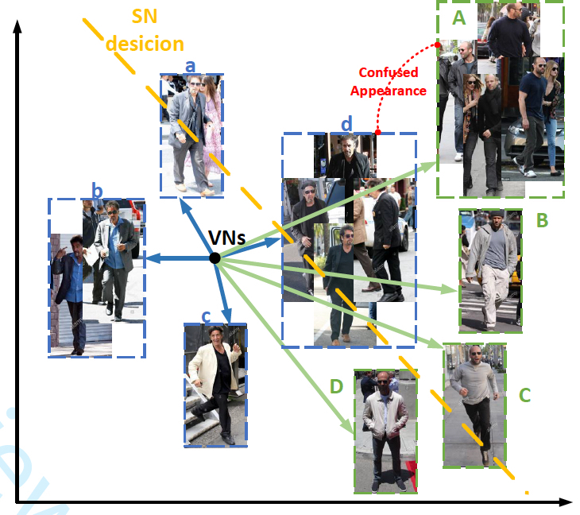
Beyond Scalar Neuron: Adopting Vector-Neuron Capsules for Long-Term Person Re-Identification.
Yan Huang, Jingsong Xu, Qiang Wu, Yi Zhong, Peng Zhang, Zhaoxiang Zhang.
IEEE Transactions on Circuits and Systems for Video Technology, 2019, Early Access.
[PDF]
Yan Huang, Jingsong Xu, Qiang Wu, Yi Zhong, Peng Zhang, Zhaoxiang Zhang.
IEEE Transactions on Circuits and Systems for Video Technology, 2019, Early Access.
[PDF]
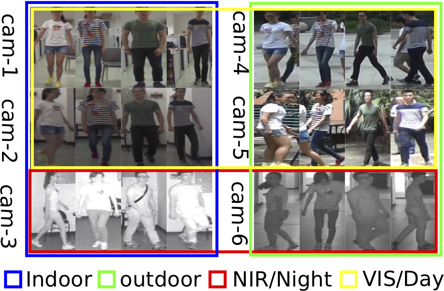
Top-Push Constrained Modality-Adaptive Dictionary Learning for Cross-Modality Person Re-Identification.
Peng Zhang, Jingsong Xu, Qiang Wu, Yan Huang, Jian Zhang.
IEEE Transactions on Circuits and Systems for Video Technology, 2019, Early Access.
[PDF]
Peng Zhang, Jingsong Xu, Qiang Wu, Yan Huang, Jian Zhang.
IEEE Transactions on Circuits and Systems for Video Technology, 2019, Early Access.
[PDF]
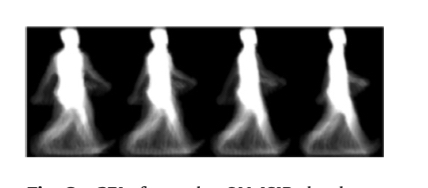
A General Tensor Representation Framework for Cross-view Gait Recognition.
Xianye Ben, Peng Zhang, Zhihui Lai, Rui Yan, Xinliang Zhai, Weixiao Meng.
Pattern Recognition, 2019.
[PDF]
Xianye Ben, Peng Zhang, Zhihui Lai, Rui Yan, Xinliang Zhai, Weixiao Meng.
Pattern Recognition, 2019.
[PDF]
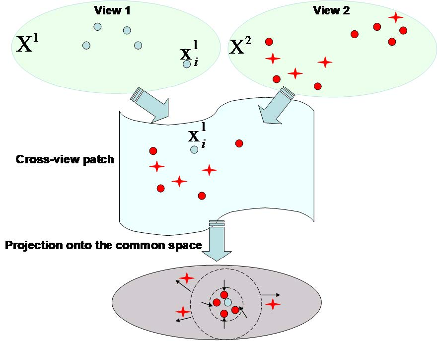
Coupled Patch Alignment for Matching Cross-View Gaits.
Xianye Ben, Chen Gong, Peng Zhang, Xitong Jia, Qiang Wu, Weixiao Meng.
IEEE Transactions on Image Processing, 2019.
[PDF]
Xianye Ben, Chen Gong, Peng Zhang, Xitong Jia, Qiang Wu, Weixiao Meng.
IEEE Transactions on Image Processing, 2019.
[PDF]
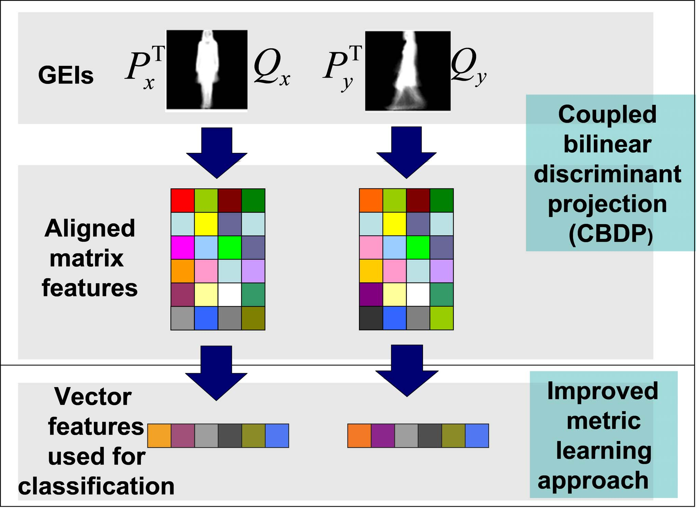
Coupled Bilinear Discriminant Projection for Cross-view Gait Recognition.
Xianye Ben, Chen Gong, Peng Zhang, Rui Yan, Qiang Wu, Weixiao Meng.
IEEE Transactions on Circuits and Systems for Video Technology, 2019.
[PDF]
Xianye Ben, Chen Gong, Peng Zhang, Rui Yan, Qiang Wu, Weixiao Meng.
IEEE Transactions on Circuits and Systems for Video Technology, 2019.
[PDF]
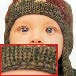
Adaptive Rational Fractal Interpolation Function for Image Super-resolution via Local Fractal Analysis.
Xunxiang Yao, Qiang Wu, Peng Zhang, Fangxun Bao.
Image and Vision Computing, 2019.
[PDF]
Xunxiang Yao, Qiang Wu, Peng Zhang, Fangxun Bao.
Image and Vision Computing, 2019.
[PDF]
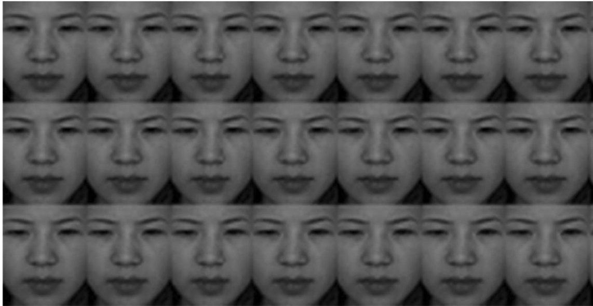
Gait Recognition And Micro-expression Recognition Based on Maximum Margin Projection with Tensor Representation.
Xianye Ben, Peng Zhang, Rui Yan, Mingqiang Yang, Guodong Ge.
Neural Computing and Applications, 2016.
[PDF]
Xianye Ben, Peng Zhang, Rui Yan, Mingqiang Yang, Guodong Ge.
Neural Computing and Applications, 2016.
[PDF]
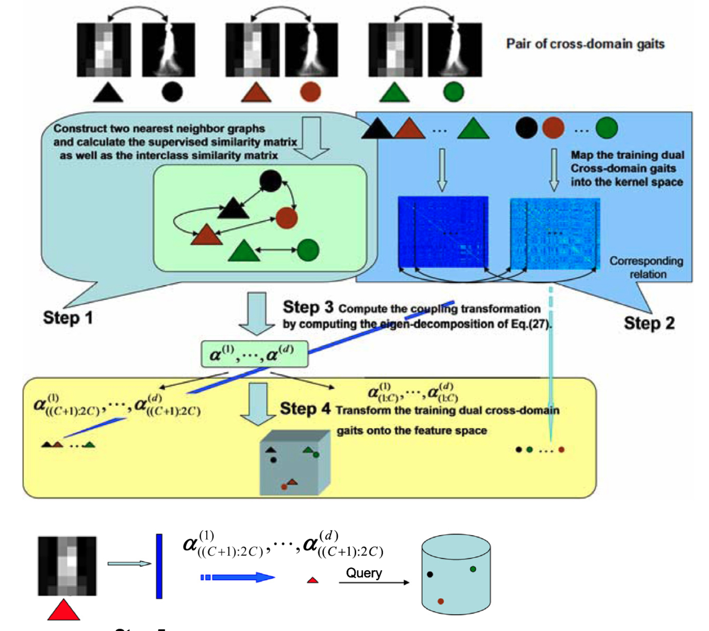
On The Distance Metric Learning Between Cross-domain Gaits.
Xianye Ben, Peng Zhang, Weixiao Meng, Rui Yan, Mingqiang Yang, Wenhe Liu, Hui Zhang.
Neurocomputing, 2016.
[PDF]
Xianye Ben, Peng Zhang, Weixiao Meng, Rui Yan, Mingqiang Yang, Wenhe Liu, Hui Zhang.
Neurocomputing, 2016.
[PDF]
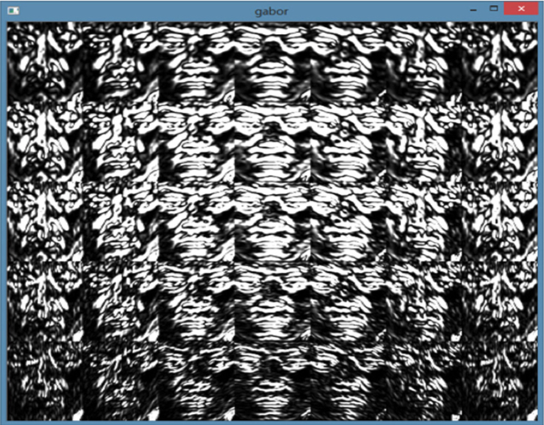
Micro-expression Recognition System.
Peng Zhang, Xianye Ben, Rui Yan, Chen Wu, Chang Guo.
Optik, 2016.
[PDF]
Peng Zhang, Xianye Ben, Rui Yan, Chen Wu, Chang Guo.
Optik, 2016.
[PDF]
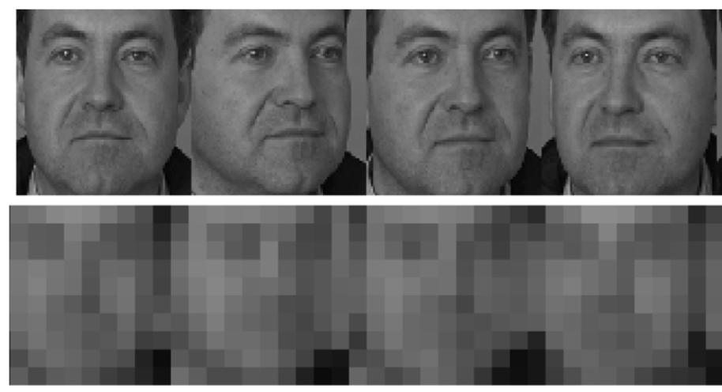
Coupled Marginal Discriminant Mappings for Low-resolution Face Recognition.
Peng Zhang, Xianye Ben, Wei Jiang, Rui Yan, Yiming Zhang.
Optik, 2015.
[PDF]
Peng Zhang, Xianye Ben, Wei Jiang, Rui Yan, Yiming Zhang.
Optik, 2015.
[PDF]
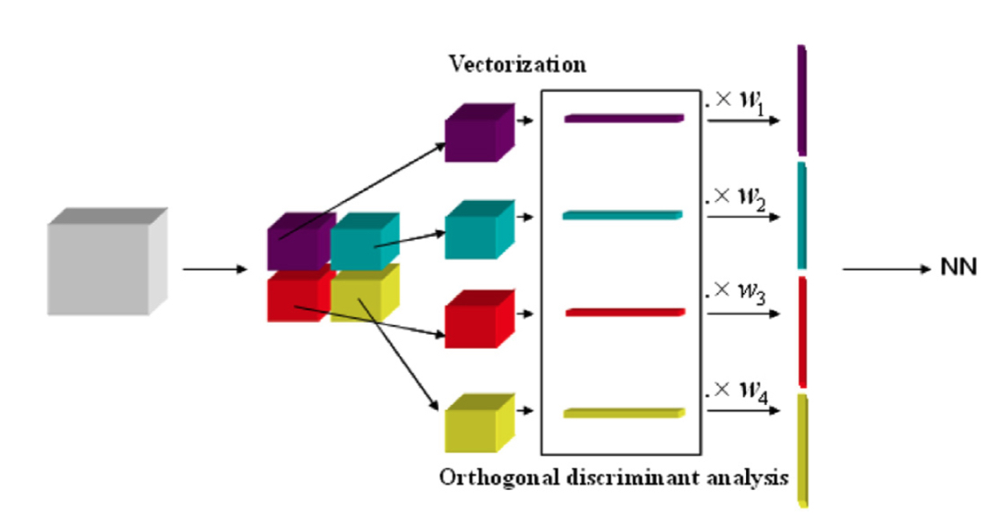
Orthogonal Multilinear Discriminant Analysis And Its Subblock Tensor Analysis Version.
Xianye Ben, Mingyan Jiang, Rui Yan, Weixiao Meng, Peng Zhang.
Optik, 2015.
[PDF]
Xianye Ben, Mingyan Jiang, Rui Yan, Weixiao Meng, Peng Zhang.
Optik, 2015.
[PDF]
Conferences
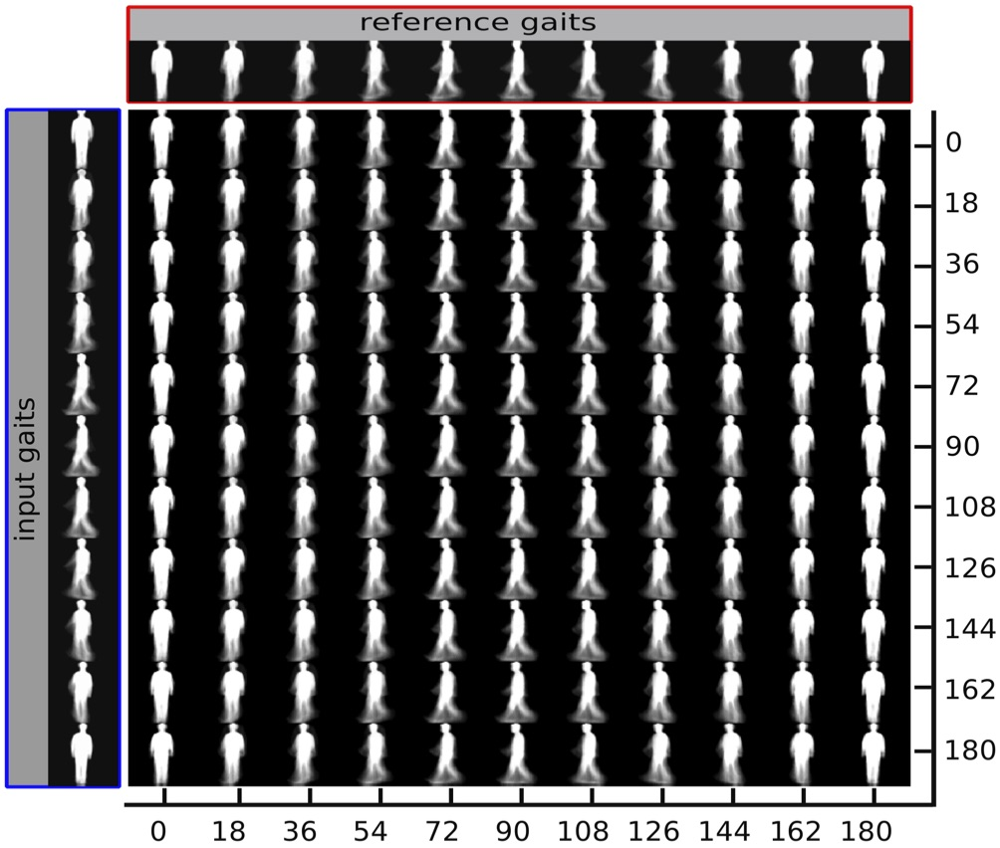
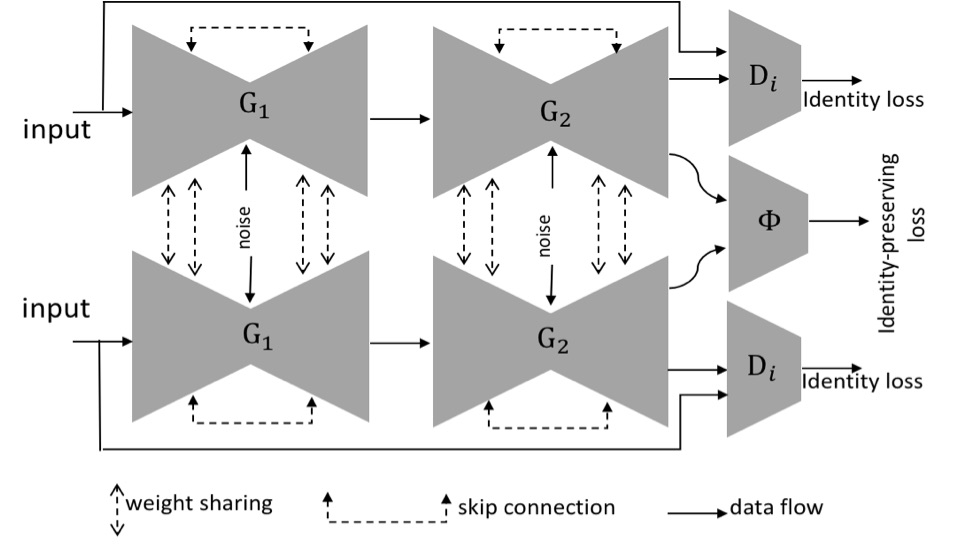
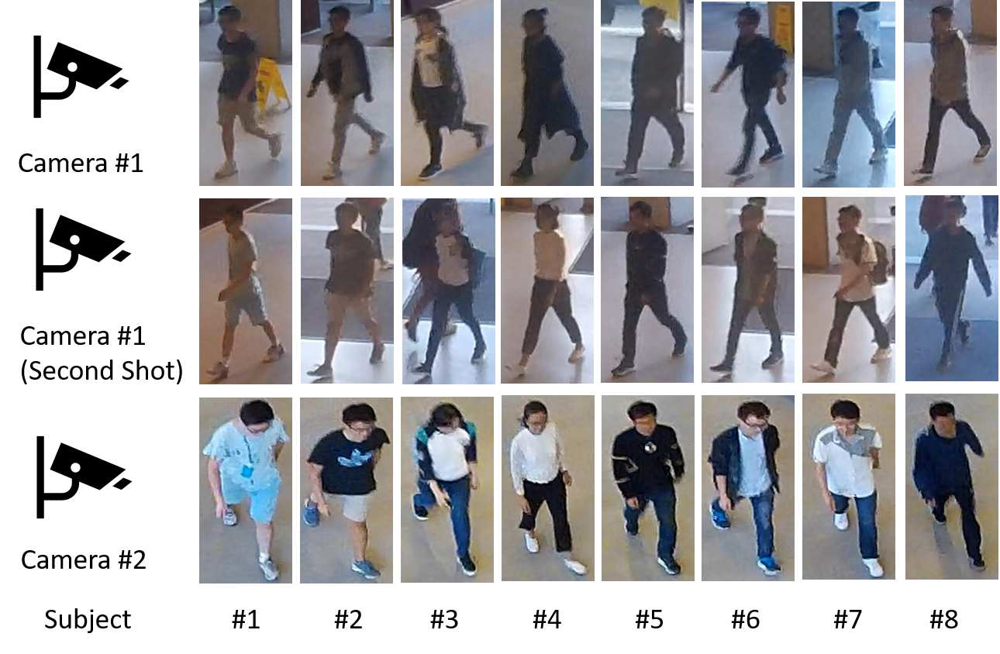
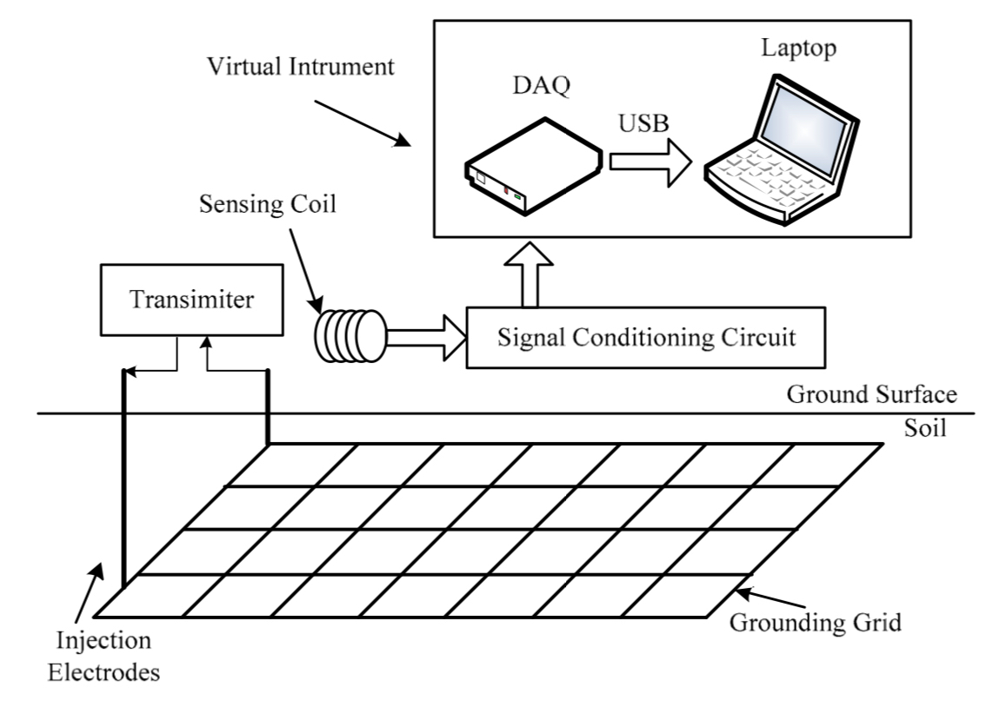
A Virtual Instrument for Diagnosis to Substation Grounding Grids in Harsh Electromagnetic Environment.
Hengli Song, Haobin Dong, Peng Zhang.
IEEE International Instrumentation And Measurement Tchnology Conference (I2MTC), 2017.
[PDF]
Hengli Song, Haobin Dong, Peng Zhang.
IEEE International Instrumentation And Measurement Tchnology Conference (I2MTC), 2017.
[PDF]
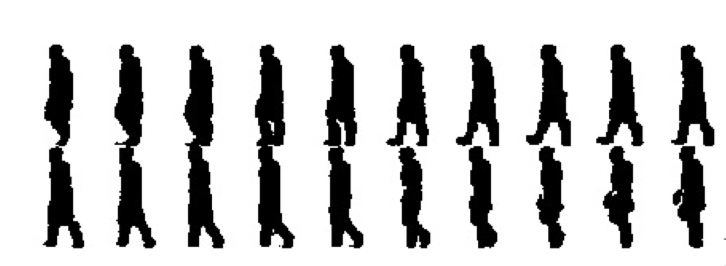
Multilinear Mean Component Analysis for Gait Recognition.
Yawei Tian, Xianye Ben, Peng Zhang.
The 26th Chinese Control and Decision Conference (CCDC), 2014.
[PDF]
Yawei Tian, Xianye Ben, Peng Zhang.
The 26th Chinese Control and Decision Conference (CCDC), 2014.
[PDF]